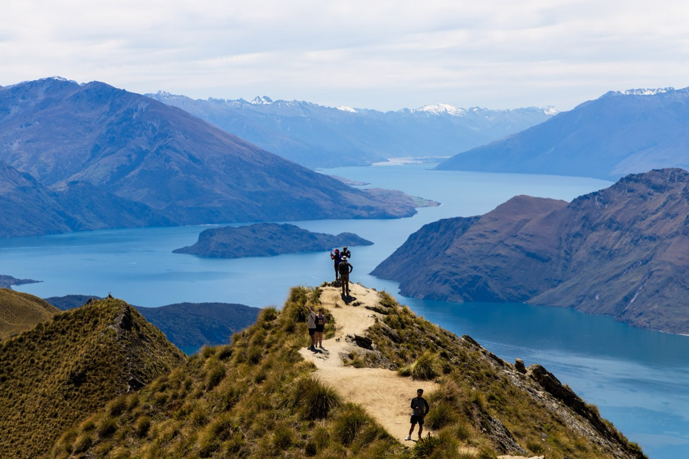
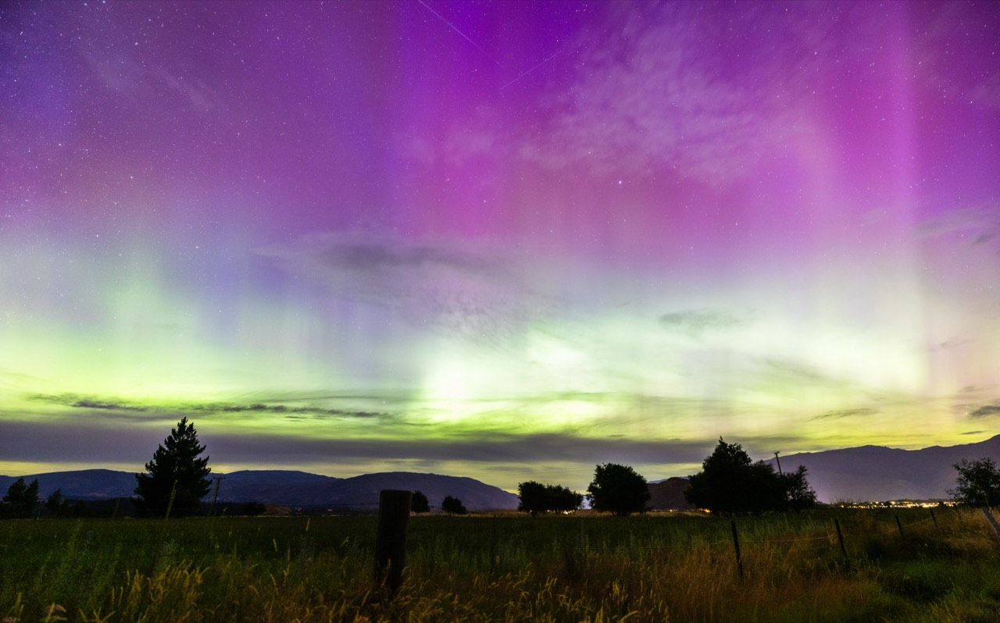

New Zealand
Landscapes that look color-graded by nature.
2026.1
Photographs




The guide for this country is not written yet.
Back to destinationsLandscapes that look color-graded by nature.
2026.1


The guide for this country is not written yet.
Back to destinations